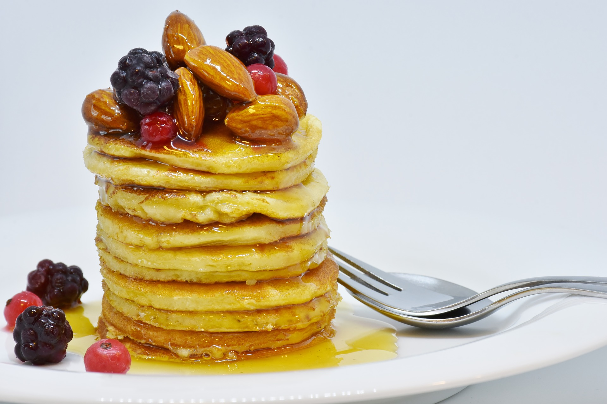

Easy Lasange Recipe

Ingredients
- 100g plain flour
- 2 large eggs
- 300ml milk
- 1 tbsp sunflower or vegetable oil, plus a little extra for frying
- lemon wedges to serve (optional)
- caster sugar to serve (optional)
Cooking Method
Cooking made simple
- STEP 1 Put 100g plain flour, 2 large eggs, 300ml milk, 1 tbsp sunflower or vegetable oil and a pinch of salt into a bowl or large jug, then whisk to a smooth batter.
- STEP 2 Set aside for 30 mins to rest if you have time, or start cooking straight away.
- STEP 3 Set a medium frying pan or crêpe pan over a medium heat and carefully wipe it with some oiled kitchen paper.
- STEP 4 When hot, cook your pancakes for 1 min on each side until golden, keeping them warm in a low oven as you go.
- STEP 5 Serve with lemon wedges and caster sugar, or your favourite filling